Analiza rješenja · JOI Spring Camp 2020 · Dan 1
Čišćenje
O ovom članku
Tekst je prijevod službene japanske prezentacije rješenja, preoblikovan u članak. Slajdovi su ugrađeni kao slike; natpis pod svakim slajdom je prijevod teksta na njemu. Dijelovi označeni kao trenerska napomena nisu u izvornoj prezentaciji — dodani su da popune korake koje slajdovi preskaču ili samo skiciraju.
Slajdovi
Uvod
izvorni slajdovi 1–2
-
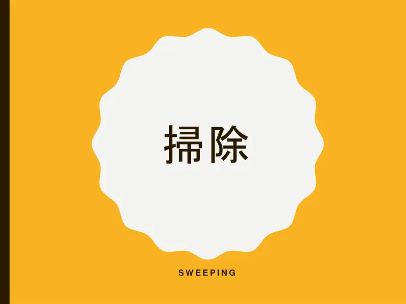
1Naslovni slajd: Čišćenje (Sweeping). -
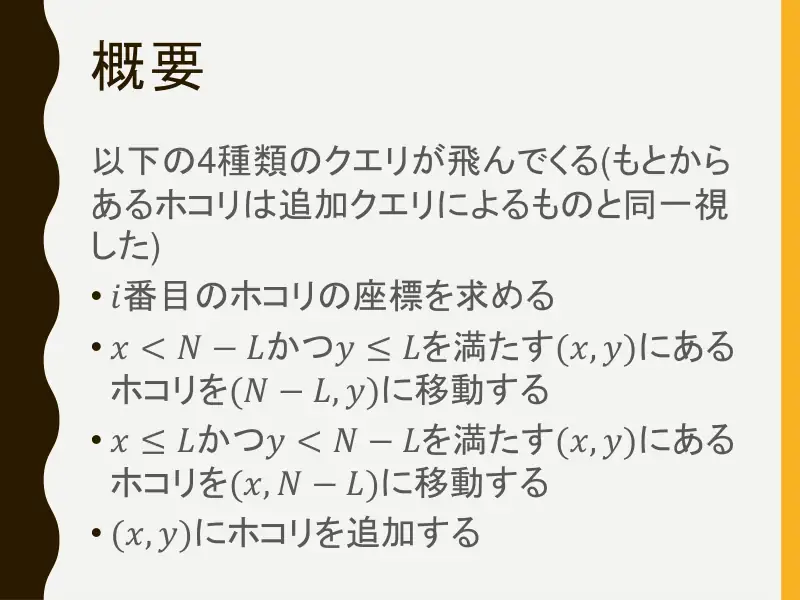
2Sažetak — četiri vrste upita (početne čestice gledamo kao dodane upitom): ispiši koordinate $i$-te čestice; čestice s $x < N-L$, $y \le L$ pomakni u $(N-L, y)$; čestice s $x \le L$, $y < N-L$ pomakni u $(x, N-L)$; dodaj česticu u $(x, y)$.
← → tipke ili klik na sliku
Podzadaci 1–3 22 boda
Slajdovi
Simulacija, samo H, sortirane čestice
izvorni slajdovi 3–8
-
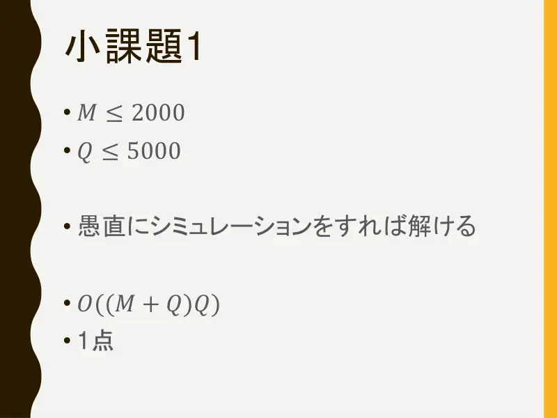
3Podzadatak 1. $M \le 2000$, $Q \le 5000$: izravna simulacija, $O((M+Q)Q)$. 1 bod. -
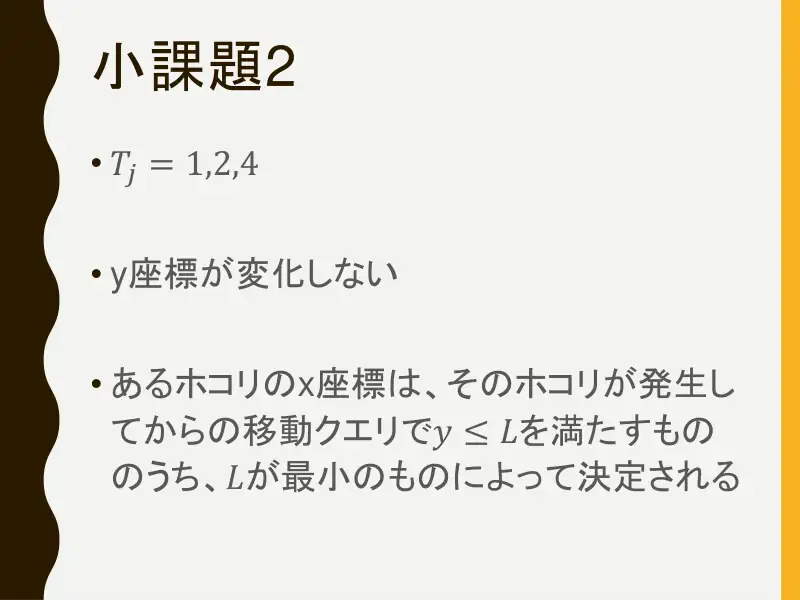
4Podzadatak 2. Samo tipovi $1, 2, 4$: $y$-koordinata se ne mijenja. $x$-koordinatu čestice određuje najmanji $L$ među H-upitima nakon njezina nastanka koji zadovoljavaju $y \le L$. -
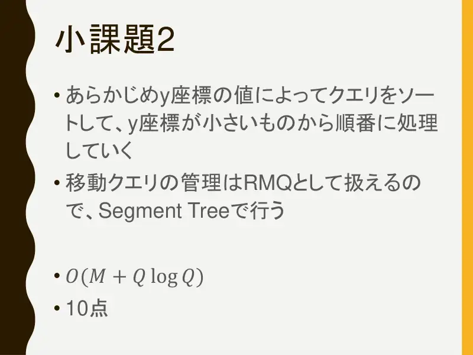
5Sortiraj upite po $y$ i obrađuj od najmanjeg $y$; upiti pomicanja postaju RMQ (minimum na vremenskom intervalu) u segmentnom stablu. $O(M + Q\log Q)$, 10 bodova. -
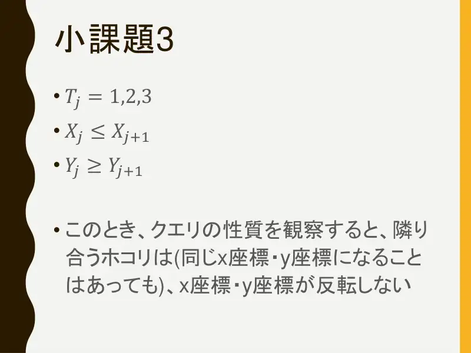
6Podzadatak 3. Tipovi $1,2,3$, čestice sortirane ($X_j \le X_{j+1}$, $Y_j \ge Y_{j+1}$). Promatranjem upita vidi se da susjedne čestice nikad ne „zamijene” poredak po $x$ ni po $y$ (mogu se izjednačiti). -
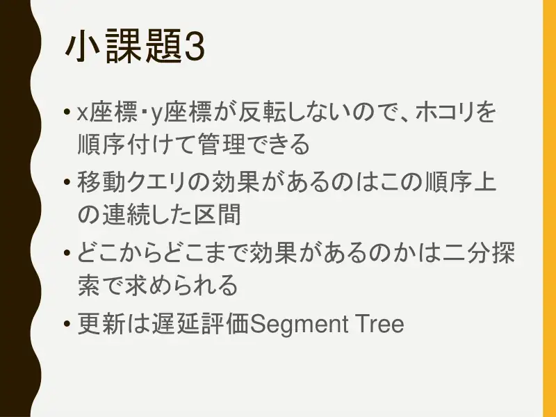
7Zato čestice držimo u fiksnom poretku; svaki upit pomicanja djeluje na uzastopni raspon tog poretka. Granice raspona nađemo binarnim pretraživanjem, ažuriranje je lijeno segmentno stablo (postavi $x$ ili $y$ na konstantu na rasponu). -
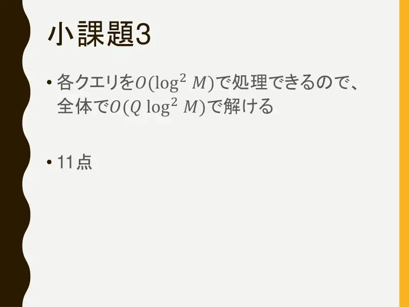
8Svaki upit u $O(\log^2 M)$, ukupno $O(Q \log^2 M)$. 11 bodova.
← → tipke ili klik na sliku
Podzadatak 4: bez dodavanja 53 boda
Koraci algoritma
Trokutasta područja i dijeljenje
izvorni slajdovi 9–13
-
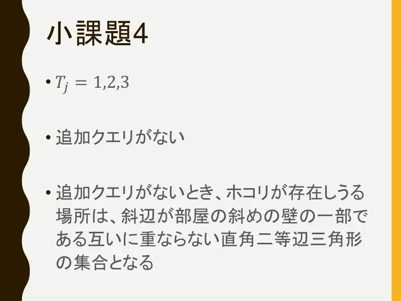
9Bez dodavanja, skup mogućih položaja čestica je unija disjunktnih jednakokračnih pravokutnih trokuta čije hipotenuze leže na kosom zidu sobe. -
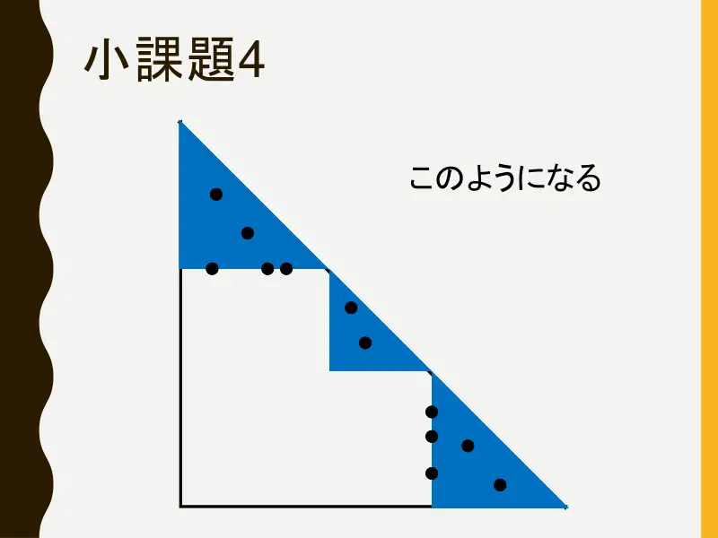
10Slika: nakon nekoliko čišćenja soba je podijeljena u manje trokute uz hipotenuzu; sve čestice su na njihovim katetama ili unutar njih. -
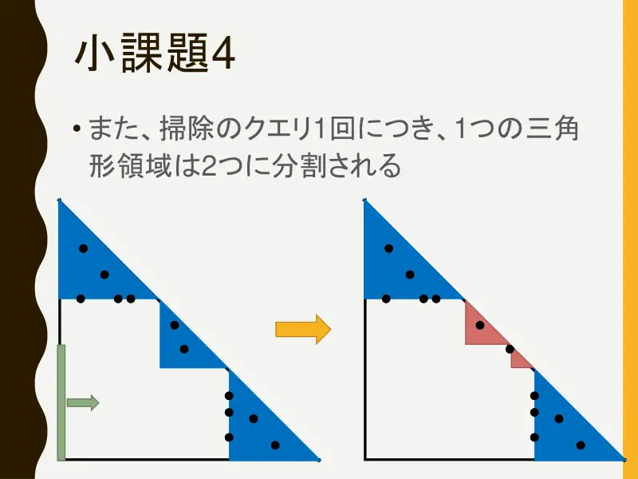
11Svaki upit čišćenja dijeli točno jedno trokutasto područje na dva (metla „reže” trokut koji sadrži točku reza). -
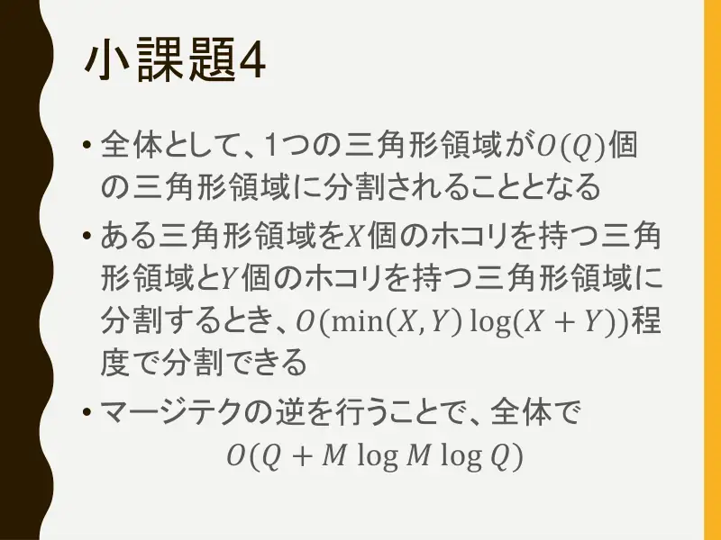
12Ukupno nastaje $O(Q)$ trokuta. Podjelu trokuta s $X$ i $Y$ čestica možemo izvesti u $O(\min(X,Y)\log(X+Y))$ — „obrnuti merge-trik” (uvijek premještamo manji dio) — ukupno $O(Q + M\log M\log Q)$. -
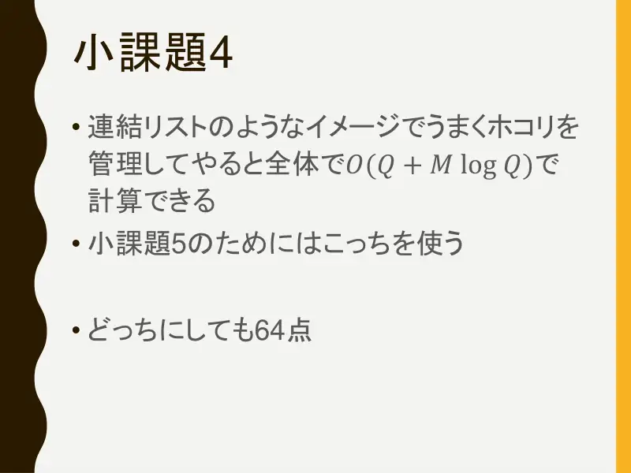
13Uz pametnije upravljanje česticama (povezana lista) ukupno $O(Q + M\log Q)$; ta je verzija potrebna za podzadatak 5 (varijanta ①). Bilo koja verzija daje 64 boda.
← → tipke ili klik na sliku
Podzadatak 5 25 bodova
Slajd
izvorni slajd 14
-
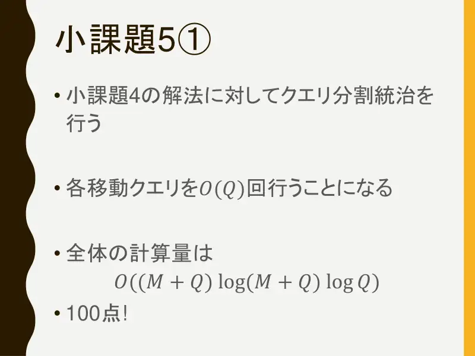
14Varijanta ①: podijeli pa vladaj po upitima nad rješenjem podzadatka 4. Svaki upit pomicanja izvodi se $O(\log Q)$ puta (u svakom čvoru rekurzije koji ga sadrži); ukupno $O((M+Q)\log(M+Q)\log Q)$. 100 bodova!
Koraci algoritma
Varijanta ②: intervali i interval-stablo
izvorni slajdovi 15–19
-
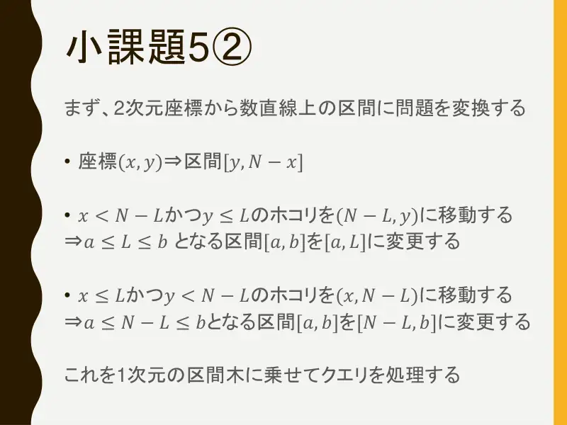
15Pretvori 2D koordinate u interval na brojevnom pravcu: $(x, y) \Rightarrow [y, N - x]$. Pomicanje čestica s $x < N-L$, $y \le L$ u $(N-L, y)$ $\Rightarrow$ intervali $[a,b]$ s $a \le L \le b$ postaju $[a, L]$. Pomicanje čestica s $x \le L$, $y < N-L$ u $(x, N-L)$ $\Rightarrow$ intervali s $a \le N-L \le b$ postaju $[N-L, b]$. To stavljamo na 1D interval-stablo. -
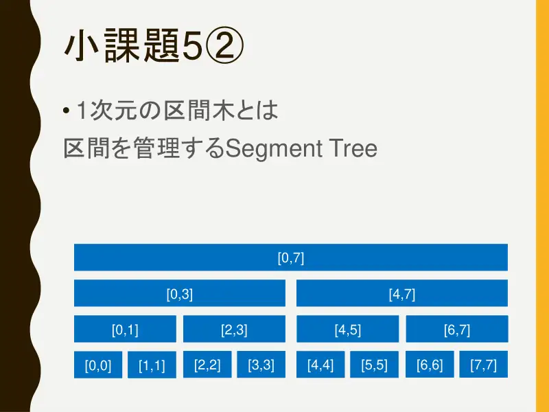
16Interval-stablo je segmentno stablo koje čuva intervale: čvorovi $[0,7]$, $[0,3]$, $[4,7]$, $[0,1]$, $[2,3]$, … , listovi $[i, i]$. -
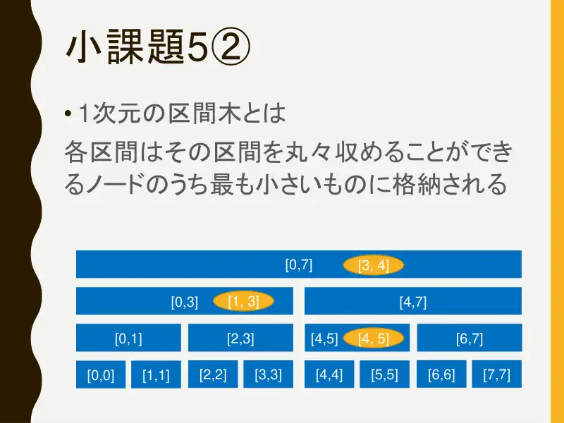
17Svaki interval sprema se u najmanji čvor koji ga cijeli sadrži: na slici $[3,4]$ ide u korijen $[0,7]$, $[1,3]$ u $[0,3]$, $[4,5]$ u $[4,5]$. -
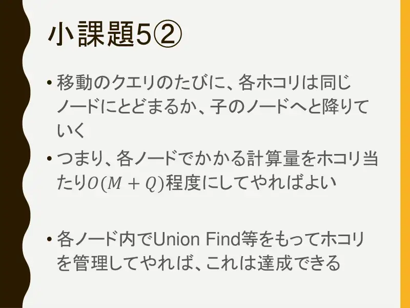
18Pri svakom upitu pomicanja svaki interval ili ostaje u svom čvoru ili silazi u dijete. Dovoljno je dakle da rad po čvoru bude ukupno $O(M+Q)$ po razini — što se postiže union-findom (ili sličnim) za skupine čestica unutar čvora. -
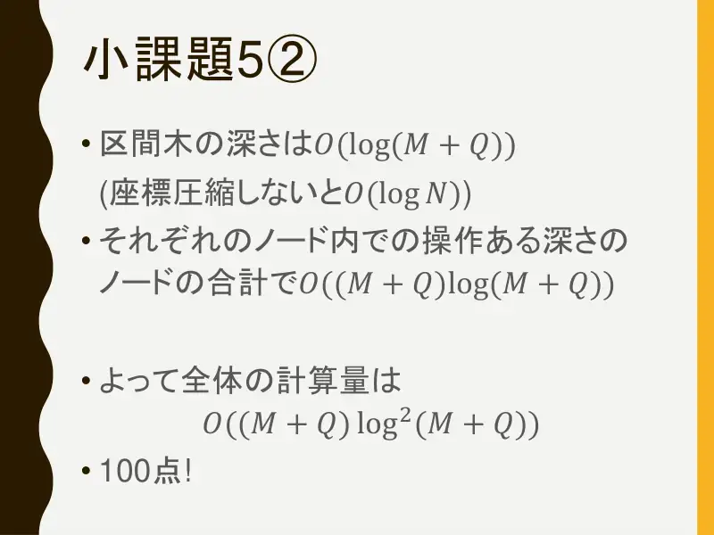
19Dubina stabla je $O(\log(M+Q))$ (uz kompresiju koordinata; bez nje $O(\log N)$). Po razini ukupno $O((M+Q)\log(M+Q))$, ukupno $O((M+Q)\log^2(M+Q))$. 100 bodova!
← → tipke ili klik na sliku
Sažetak
- Čestica $(x, y) \leftrightarrow$ interval $[y, N-x]$; metla reže sve intervale koji sadrže točku i zadržava jednu stranu.
- Interval-stablo: intervali koji sadrže $p$ su na putu korijen–list; rez ih skupno skrati i spusti niže.
- Union-find po čvorovima daje ukupno $O((M+Q)\log^2(M+Q))$; alternativa je podjela po upitima nad trokutnom dekompozicijom.